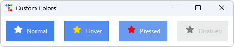

Stateful Icons¶
Stateful Icons allow you to create dynamic, interactive icons that automatically change their appearance based on widget states like hover, pressed, disabled, and more. This powerful feature brings modern UI/UX patterns to your tkinter applications with minimal code.

What is State Mapping?¶
State mapping connects different icon appearances to specific widget states. When a user interacts with a widget ( hovering over a button, clicking it, etc.), the icon automatically updates to reflect that interaction.
Common use cases:
- Change icon color on hover to provide visual feedback
- Display a different icon variant when a button is pressed
- Show a dimmed/greyed icon when a widget is disabled
- Highlight active navigation items with distinct icons
How It Works¶
The StatefulIconMixin is included with all icon classes in ttkbootstrap-icons. It works by:
- Reading widget states: Detects ttk widget states like
hover,pressed,disabled,selected, etc. - Mapping states to icons: Associates each state with an icon appearance (color and/or name)
- Automatic rendering: Generates icon images for each state
- Style application: Creates a child ttk style with state-aware image mappings
The mixin works with any ttk widget that accepts an image parameter, including:
ttk.Buttonttk.Checkbuttonttk.Radiobuttonttk.Labelttk.Menubutton- And more...
Basic Usage¶
Automatic Color Mapping¶
The simplest approach: icons automatically inherit the parent style's foreground colors for each state.
import ttkbootstrap as tb
from ttkbootstrap_icons import BootstrapIcon
root = tb.Window(themename="darkly")
# Create an icon
icon = BootstrapIcon("heart", size=32)
# Create a button
btn = tb.Button(root, text="Like", compound="left")
# Map the icon to the button - colors auto-match the theme
icon.map(btn)
btn.pack(padx=20, pady=20)
root.mainloop()

In this example, the icon will:
- Use the button's normal foreground color by default
- Change to the hover foreground color when you hover over the button
- Use the pressed color when clicked
- Appear dimmed when disabled
Custom State Specifications¶
Override Colors Per State¶
You can explicitly set icon colors for specific states:
from ttkbootstrap_icons import BootstrapIcon
icon = BootstrapIcon("star", size=24)
# Define custom colors for each state
icon.map(
button,
statespec=[
("disabled", "gray"),
("pressed !disabled", "red"),
("hover !disabled", "gold")
]
)

Change Icon Name Per State¶
Display entirely different icons for different states:
from ttkbootstrap_icons import BootstrapIcon
sound = BootstrapIcon("mic-mute-fill", 64)
# Switch to muted mic icon on selected
sound.map(toggle, statespec=[("selected", {"name": "mic-fill"})])

This is perfect for creating toggle-like visual feedback or showing action previews.
Merge vs Replace Modes¶
By default, the map() method uses merge mode, which preserves existing state mappings and adds new ones. You can
change this behavior:
Merge Mode (Default)¶
icon.map(button, statespec=[("hover", "#ff0000")])
# Later, add more states
icon.map(button, statespec=[("pressed", "#aa0000")], mode="merge")
# Both hover and pressed states are now active
Replace Mode¶
icon.map(button, statespec=[("hover", "#ff0000")])
# Replace all previous mappings
icon.map(button, statespec=[("pressed", "#aa0000")], mode="replace")
# Only pressed state is active now
Custom Child Style Names¶
By default, child styles are auto-named using a hash of the icons used and their size (e.g., "a3f4e7b2c1d6.TButton").
This ensures style names won't conflict with ttkbootstrap's internal parsing.
However, you can provide a custom name when you want to create a reusable style subclass:
icon.map(
button,
subclass="MyCustomButton", # Creates "MyCustomButton.TButton" style
statespec=[("hover", "#007bff")]
)
When to use subclass:
- You're creating a reusable style that will be applied to multiple widgets
- You want predictable, human-readable style names for debugging
- You need to reference the style elsewhere in your code or extend it further
When to skip subclass:
- For one-off icon mappings (the auto-generated hash works great)
- When you don't need to reference the style name later
- When you want to ensure unique styles for each icon configuration
Working with Different Icon Providers¶
Stateful icons work with all icon providers:
# Font Awesome
from ttkbootstrap_icons_fa import FAIcon
icon = FAIcon("heart", size=24, style="solid")
icon.map(button, statespec=[("hover", "#e74c3c")])
# Remix Icons
from ttkbootstrap_icons_remix import RemixIcon
icon = RemixIcon("star-line", size=24)
icon.map(button, statespec=[("hover", {"name": "star-fill"})])
# Material Icons
from ttkbootstrap_icons_mat import MatIcon
icon = MatIcon("favorite", size=24, style="outlined")
icon.map(button, statespec=[("hover", {"name": "favorite", "color": "#f44336"})])
# Bootstrap Icons (built-in)
from ttkbootstrap_icons import Icon
icon = Icon("heart", size=24)
icon.map(button, statespec=[("hover", "#dc3545")])
Tips and Best Practices¶
1. Use Theme Colors¶
Let icons inherit theme colors for consistent appearance:
2. Test All States¶
Always test your stateful icons in all applicable states:
- Normal
- Hover
- Pressed/Active
- Disabled
- Selected (for checkbuttons/radiobuttons)
3. Provide Visual Feedback¶
Use stateful icons to give users immediate feedback:
- Color change on hover = clickable
- Icon swap on press = action preview
- Dimmed icon on disable = unavailable
4. Keep It Subtle¶
Overly dramatic state changes can be distracting. Aim for smooth, professional transitions:
- ✅ Slight color darkening on hover
- ✅ Icon variant swap (outline to filled)
- ❌ Completely different unrelated icons
- ❌ Jarring color shifts (red to yellow to green)
5. Consider Accessibility¶
Ensure adequate color contrast in all states:
# Good: Clear contrast in all states
statespec = [
("hover", "#0056b3"), # Dark blue
("!hover", "#007bff"), # Medium blue
("disabled", "#6c757d"), # Grey
]
Common State Flags¶
TTK widgets support various state flags that you can use in your statespec:
| State Flag | Description | Common Widgets |
|---|---|---|
hover |
Mouse is over the widget | All interactive widgets |
pressed |
Widget is being clicked | Button, Checkbutton |
selected |
Widget is in selected state | Checkbutton, Radiobutton |
disabled |
Widget is disabled | All widgets |
active |
Widget has focus or is active | All widgets |
focus |
Widget has keyboard focus | All widgets |
!state |
Negation (NOT in this state) | All (e.g., !disabled) |
You can combine states using spaces:
("hover !disabled", "#007bff") # Hover AND not disabled
("selected active", "#28a745") # Selected AND active
Troubleshooting¶
Icons Not Changing on State¶
- Check widget type: Ensure the widget supports the states you're using
- Verify state syntax: Use correct state flag names (case-sensitive)
- Test mode: Try
mode="replace"to clear previous mappings
Colors Not Applying¶
- Color format: Use hex colors (
#RRGGBB) or named colors ("red") - Theme override: Some themes may override certain state colors
- Check specificity: More specific state combinations match first
Performance with Many Icons¶
- Reuse instances: Don't create new icon instances unnecessarily
- Use subclass names: Helps ttk cache and reuse styles efficiently
- Limit states: Only map states you actually need
Style Naming and Reusability¶
By default, stateful icons generate a unique hashed style name (e.g., "a3f4e7b2c1d6.TButton") for each icon
configuration. This works perfectly for most use cases, but if you want to create a reusable style subclass that can
be applied to multiple widgets or referenced elsewhere, use the subclass parameter:
# Create a reusable style
icon.map(button1, subclass="IconButton", statespec=[("hover", "#007bff")])
icon.map(button2, subclass="IconButton") # Reuses the same style
# Later, you can reference or extend this style
style = ttk.Style()
style.configure("IconButton.TButton", padding=10)
Without subclass, each call generates a new unique style, which is ideal for one-off icon mappings.
Next Steps¶
- API Reference: See the StatefulIconMixin API documentation for complete method signatures and parameters
- Icon Browser: Use the Icon Browser to explore available icons and styles
- Provider Docs: Check provider-specific documentation for style variants available for state mapping